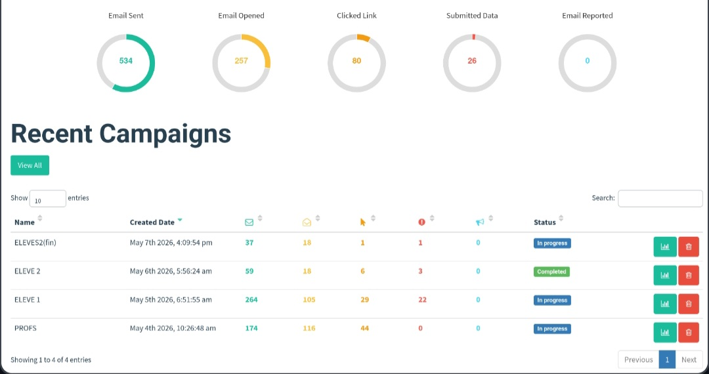

Campagne de simulation de Phishing au Pôle Supérieur Saint-Denis
1. Contexte & Cadre légal (RGPD)
Réalisé en équipe de trois étudiants au sein du Pôle Supérieur de Saint-Denis, ce projet visait à évaluer la vigilance des élèves et des professeurs face aux attaques par ingénierie sociale.
Pour respecter le cadre légal (RGPD), nous avons signé une décharge officielle avec le responsable du parc informatique nous interdisant formellement de stocker ou consulter en clair les mots de passe saisis.
2. Objectifs & Outils utilisés
- Objectif : Sensibiliser les utilisateurs aux risques liés au vol d'identifiants et promouvoir les bons réflexes numériques.
- Matériel & Infrastructure : Raspberry Pi hébergeant la plateforme Gophish et un Serveur Web dédié.
- Technologies : HTML / CSS (clonage de la page de connexion Microsoft) et gestion d'envoi de mails (SMTP).
3. Travail réalisé & Déroulement technique
Nous avons configuré l'outil open source Gophish sur un Raspberry Pi afin de lancer plusieurs campagnes ciblées (PROFS, ELEVE 1, ELEVE 2). À partir d'une adresse d'expédition usurpant l'identité de Microsoft, les cibles recevaient un courriel les invitant à se connecter via un lien redirigeant vers notre fausse page d'authentification hébergée sur notre serveur web. Gophish permettait ensuite de suivre en temps réel le taux d'ouverture, les clics et les soumissions de formulaire.
4. Résultats obtenus & Livraison
Sur l'ensemble des 4 campagnes lancées en mai 2026 (534 courriels envoyés aux professeurs et étudiants) :
- 257 mails ouverts (soit environ 48 % d'ouverture).
- 80 personnes ont cliqué sur le lien piégé (44 professeurs et 36 élèves).
- 26 utilisateurs ont saisi leurs identifiants sur la fausse page (uniquement des élèves, aucun professeur n'ayant soumis ses identifiants).
- Livrable : Création et distribution d'un flyer de sensibilisation lors de la soutenance orale pour apprendre à repérer un mail frauduleux.

Tableau de bord Gophish : suivi des campagnes (mai 2026)5. Bilan personnel : Ce projet m'a permis de prendre en main un Raspberry Pi, de déployer un serveur web et de comprendre concrètement les mécanismes de l'ingénierie sociale (social engineering) afin de mieux protéger les utilisateurs en entreprise.